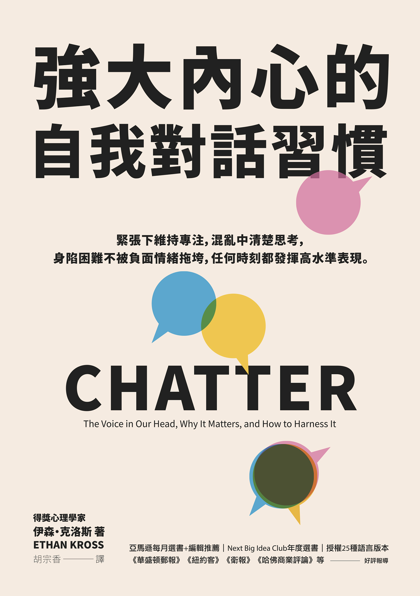

《強大內心的自我對話習慣》
密西根大學情緒自控實驗室：掌控大腦失控小對話，走出內耗風暴
腦海中反覆重播的自責屬於大腦注意力失焦的神經信號。學會拉開心理距離，內在便能重獲清明與自主。
寫給常在退讓中委屈自己的妳
白天的爭執明明已經過去，回到家躺在床上，大腦卻開啟了殘酷的『午夜法庭』：一遍遍重播對方的眼神、懊悔自己剛才怎麼沒說出那句話、反覆咀嚼每一處難堪細節。克洛斯教授指出，這叫『反芻思考（Rumination / Chatter）』。當情緒小對話失控時，它會霸佔大腦的工作記憶，讓妳無法入睡、甚至加速身體細胞老化。克洛斯結合最前沿的神經科學研究，給出了一套立竿見影的『心理抽離急救包』。學會這些工具，妳就能隨時在腦海中切斷自責循環，重新找回清晰專注的生活節奏。
當妳讀這本書時，請不要抱持「我要把自己徹底改造成另一種人」的焦慮。相反地，妳的善良、同理心與細膩感知，是這個世界上最稀缺的天賦。這本書只是為妳的溫柔裝上邊界，讓妳在面對權力與人性的試煉時，多了一件隨時能護住心靈的軟蝟甲。
全書精選力量金句庫
在那些感到懷疑、疲憊或想退縮的時刻，點擊複製一句抄進手帳，讓文字成為妳前行時的微光。
當大腦的小對話失控時，它不會帶來任何解決方案，只會把我們的視線牢牢鎖死在痛苦的顯微鏡下。
用第三人稱呼喚自己的名字並對自己說話，就像是化身為一位睿智、溫柔的摯友站在身旁給予安撫。
恐懼與焦慮會把視野縮小為一個針孔，讓一句無心的話看起來宛如天崩地裂；拉開距離才能讓妳看清全貌。
動手整理妳的房間、收拾書桌，大腦會從外部空間的井然有序中，同步找回對內在世界的掌控感。
不要找只會陪妳一起宣洩抱怨的人訴苦，那只會像給乾柴添火一樣加劇反芻；尋找能帶妳跳出局限看全局的夥伴。
大自然與浩瀚的星空具有強大的平復力量；當妳體驗到『敬畏感（Awe）』時，狹隘的自我糾結就會在大格局中悄然消融。
把妳的痛苦訴諸文字並為情緒精準命名；當情緒被語言賦予形狀，大腦杏仁核的警報就已經解除了一半。
允許大腦中偶爾出現雜音，不要為了『我又在內耗了』而陷入二次自責。溫柔對雜音說：『我看見你了，但現在我要去睡覺了。』
典型困境現場自處指南
不再只是空洞的大道理。以下對照表拆解了三個妳最常碰到的生活與工作場景，教妳如何在當下從容應對。
🌿 職場：剛結束一場不愉快的績效談話，心臟狂跳、手心冰涼，滿腦子『我徹底搞砸了』
一遍遍在大腦裡拷打自己，連發數條長訊息向朋友反覆哭訴，整晚無法入睡。
立刻啟動『第三人稱心理抽離法』。走到洗手間用冷水洗手，看著鏡子裡的自己輕聲說：「［妳的名字］，妳現在心率過快，因為大腦誤以為妳遭遇了致命威脅。事實是，這只是一次季度評估，這不是對妳人生的審判。半年後的妳，根本想不起今天的細節。」
🌿 生活：傳送訊息後對方已讀不回，開始胡思亂想對方的負面態度
隔五分鐘看一次手機，坐立難安，反覆檢查自己的上一條文字有沒有說錯話。
啟動『思維時間旅行』：自問「明天這個時候這件事重要嗎？一個月後呢？三年後呢？」意識到其微不足道後，將手機放進抽屜，打開吸塵器打掃客廳或做 15 分鐘瑜伽。
🌿 內在：深夜感到極度孤獨迷茫，自我批判的聲音像浪潮一樣湧來
順著批判的聲音一直往下沉淪，覺得自己一無是處、人生毫無希望。
拿出一張紙，寫下「此時此刻的痛苦」；接著打開一扇窗戶望向夜空或點開一段浩瀚宇宙/壯闊雪山的影片觀看五分鐘，感受生命的宏大與個體的渺小，輕輕對自己說聲晚安。
三條融入生活的實踐微習慣
- 『床頭紙筆結案法』：睡前把大腦中盤旋的三個煩惱寫在便條紙上，在後面寫上「明天上午9點再處理」，折疊放進抽屜，給大腦一個明確的關機訊號。
- 『綠色自然漫步』：感到內耗爆棚時，到附近的公園或綠植前散步20分鐘，不戴耳機，專注觀察樹葉與風的流動。
- 『同理摯友視角』：當想責備自己時，停下來想一想：「如果現在是我最心愛的閨蜜遇到這件事，我會怎麼溫柔地對她說話？」然後用同樣的語氣對自己說。
獲取電子書與閱讀指引
📥 本書電子書資源（正版校訂 EPUB）
檔案大小：811 KB (繁中精校 EPUB) · 支援 Apple Books、微信讀書、Kobo、Kindle 本地閱讀